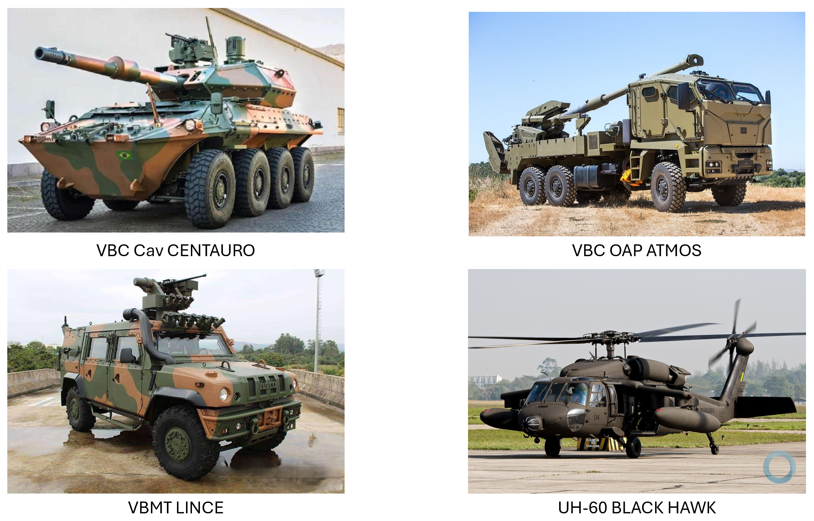
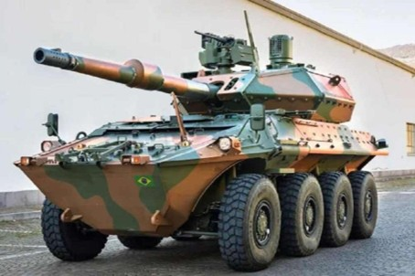
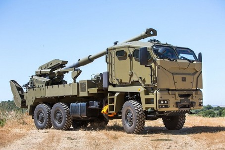
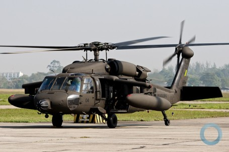
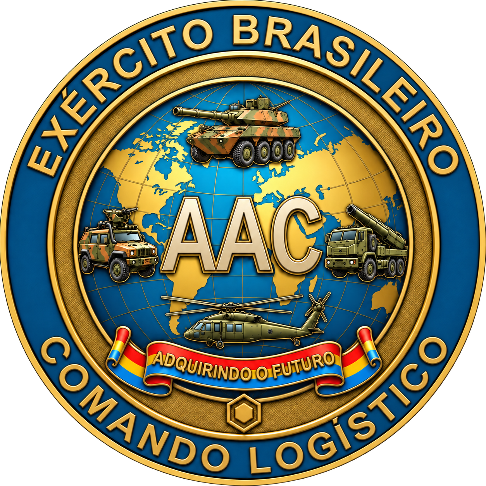

Padronização insuficiente
Variações procedimentais, processuais e normativas entre aquisições.
01 · PROPOSTA DE EVOLUÇÃO INSTITUCIONAL
Da assessoria técnica a uma estrutura executiva permanente, diretamente ligada ao Comandante Logístico e responsável pela continuidade dos processos de obtenção complexa.

BLOCO 1 · O DIAGNÓSTICO
O diagnóstico do documento-base identifica aquisições de alto valor conduzidas separadamente pelas Chefias do COLOG, sem fluxo transversal ou banco comum de lições aprendidas.



O aprendizado permanece em cada aquisição e não se consolida como conhecimento do COLOG.
Variações procedimentais, processuais e normativas entre aquisições.
Experiências acumuladas sem retenção sistemática para os processos seguintes.
Fragilidades de instrução e de rastreabilidade das decisões.
BLOCO 1 · O GARGALO HISTÓRICO
Segundo o roteiro, as Chefias concentravam a preparação dos projetos; o Centro de Obtenções do Exército atuava sobretudo nos ajustes normativos, processuais e procedimentais.
Estruturação do projeto e concentração das tarefas de aquisição.
Ajustes em processos já modelados, com participação limitada nas regras do negócio e na modelagem técnica, orçamentária e financeira.
Menor disponibilidade das Chefias para a gestão logística de suprimento e manutenção.
Riscos, finanças, logística, offset e precificação precisam ser tratados em conjunto ao longo do processo.
TRÊS LIMITAÇÕES A SUPERAR
Integração insuficiente das dimensões técnicas e contratuais da obtenção.
Instalações inadequadas para comportar o efetivo demandado.
Escassez de militares especializados e necessidade de capacitação permanente.
BLOCO 2 · O EMBRIÃO TÉCNICO
A reunião de especialistas dedicados aos sistemas complexos inicia a correção da fragmentação e aproxima planejamento, assessoramento e gerenciamento.
Estrutura informada no documento-base.
Um dos quatro Oficiais Superiores ainda não havia se apresentado.
Apoio ao Comandante Logístico na condução das obtenções complexas.
Economicidade, eficiência e sustentabilidade orientam a preparação do processo.
Conexão entre obtenção, produção, suporte logístico e contratos de compensação.
CINCO PILARES DE ATUAÇÃO
Selecione um pilar para explorar sua contribuição.
Estruturar estudos e necessidades para fundamentar a escolha da solução e a organização do processo.
Manter a coordenação dos trabalhos, das informações e dos compromissos ao longo da obtenção.
Relacionar a aquisição à operação e ao apoio necessário durante a vida do sistema.
Articular o acompanhamento dos contratos de produção, suporte logístico e compensação.
Consolidar métodos, práticas e lições aprendidas para apoiar as aquisições seguintes.
PORTFÓLIO CITADO NO ROTEIRO
Helicóptero Black Hawk e Sistema de Aeronaves Remotamente Pilotadas (SAPR) Categoria 3.
VBC Cav Centauro II BR (8×8) e obuseiro autopropulsado ATMOS 155 mm.
Sistema de Média Altura e Sistema Conjunto de Média/Grande Altura.
VBC Fuz e VBC Carro de Combate (CC).
BLOCO 2 · OS MESTRADOS ESPECÍFICOS
O roteiro destaca a decisão de enviar três oficiais para pós-graduação stricto sensu voltada às aquisições complexas, com linhas de pesquisa complementares.
CEL LAURIA
Análise Multicritério / Tomada de Decisão Multicritério (MCDM) em seleção, julgamento, habilitação e decisões intermediárias.
CEL BRITO
Modelagem completa da aquisição e desenho do ciclo de vida dos processos, do Estudo Técnico Preliminar ao término do contrato.
MAJ JENNIFER
Análise de processos pretéritos do COLOG e de apontamentos dos órgãos de controle, com foco nos riscos em contratos de defesa.
As linhas de pesquisa aproximam método decisório, organização do processo e tratamento dos riscos.
BLOCO 2 · ARTICULAÇÃO E REFERÊNCIA INTERFORÇAS
O roteiro associa a liderança por Oficial-General à interlocução com outras Chefias, COEx, Órgãos de Direção Setorial e Órgão de Direção Geral.
LIDERANÇA ESTRATÉGICA
A experiência orçamentário-financeira de um General de Intendência, oriundo da chefia da 6ª SCh/EME, é destacada no documento como base para a articulação institucional.
Comissão Coordenadora do Programa Aeronave de Combate, no DCTA.
Continuidade da gestão, da concepção ao encerramento contratual.Institucionalizar uma estrutura dedicada aos SMEM terrestres e aéreos, articulando competências de EPEx, COEx e Chefias.
BLOCO 3 · PROPOSTA 01
A mudança de identidade proposta dá permanência à capacidade técnica e representatividade externa à condução das obtenções estratégicas complexas.
Assessoria de Aquisições Complexas
Comissão de Obtenção de Produtos Estratégicos Complexos
A proposta busca interlocução simétrica com a Base Industrial de Defesa e Segurança, tomando a COPAC como referência de identidade organizacional.
BLOCO 3 · PROPOSTA 02
A estrutura proposta combina Presidência, Vice-Presidência e duas divisões, com cinco núcleos técnicos mobilizados conforme as encomendas.
Selecione um núcleo para conhecer sua contribuição no arranjo proposto.
Articular o planejamento da obtenção, os estudos preliminares e a identificação e o tratamento dos riscos do processo.
Integrar as condições orçamentárias e financeiras, as propostas comerciais e a engenharia financeira da obtenção.
Acompanhar o planejamento logístico e a verificação das entregas de suporte necessárias à transição para as Chefias.
Integrar os acordos de compensação à obtenção e apoiar a análise de preços e dos compromissos assumidos.
Consolidar o acompanhamento dos contratos, as evidências de execução e as informações para a prestação de contas.
Representação funcional da proposta: as divisões integram e apoiam a atuação dos cinco núcleos. O detalhamento de subordinações e atribuições deverá compor o ato de criação.
BLOCO 3 · PROPOSTA 05
O documento fixa o efetivo total por categoria. A distribuição abaixo é uma sugestão de organização que respeita esses quantitativos e requer validação institucional.
Distinção entre dado e proposta: os totais 1 + 10 + 6 + 4 constam do documento-base. A alocação por função não foi fornecida; a matriz é indicativa e não representa quadro de cargos aprovado.
| Função / unidade | Oficial- General | Oficiais Superiores | Tenentes | Sargentos | Total |
|---|---|---|---|---|---|
| Presidência | 1 | — | — | — | 1 |
| Vice-Presidência | — | 1 | — | — | 1 |
| Coordenação e Integração | — | 2 | 1 | — | 3 |
| Planejamento e Riscos | — | 2 | 1 | — | 3 |
| Orçamentário e Financeiro | — | 1 | 1 | — | 2 |
| Suporte Logístico Integrado | — | 1 | 1 | — | 2 |
| Offset e Precificação | — | 1 | 1 | — | 2 |
| Acompanhamento e Controle | — | 1 | 1 | 1 | 3 |
| Administrativa e Apoio | — | 1 | — | 3 | 4 |
| Total proposto no documento | 1 | 10 | 6 | 4 | 21 |
O efetivo, as instalações e o desenvolvimento profissional precisam acompanhar o escopo atribuído à Comissão.
BLOCO 4 · PROPOSTA 03
A proposta amplia a atuação para cinco fases e estabelece continuidade entre os estudos, as relações comerciais e financeiras, as compensações, a logística e a prestação de contas.
A fase inicial estabelece a necessidade e organiza o Estudo Técnico Preliminar. A COPEC assume a guarda do processo em articulação com o COEx e as Chefias.
As condições de fornecimento e de financiamento são examinadas em conjunto, mantendo a coerência da solução com os recursos e os compromissos previstos.
Os compromissos de compensação acompanham a obtenção e precisam ter suas entregas e resultados demonstrados.
O planejamento do Suporte Logístico Inicial e do Apoio Logístico Integrado conecta o fornecimento à sustentação do sistema.
A guarda do processo alcança a prestação de contas final e a extinção contratual, consolidando entregas, registros e responsabilidades.
Sequência narrativa do roteiro. A coordenação de riscos, finanças, compensações e logística permanece integrada ao longo das fases.
BLOCO 4 · PROPOSTA 04
A entrega física do sistema não encerra a responsabilidade proposta para a COPEC. O marco de transferência exige a conclusão e o ateste formal do Suporte Logístico Inicial.
Condução e acompanhamento integrado das entregas.
Responsabilidade integral pelo SMEM, conforme a regra proposta.
A conclusão do fornecimento físico, isoladamente, não aciona a transferência integral. A proposta busca impedir que os sistemas cheguem às unidades sem cadeia logística, sobressalentes e manuais homologados.
O marco depende da conclusão e do ateste formal do Suporte Logístico Inicial. A guarda do processo pela COPEC continua até os encerramentos contratuais cabíveis, inclusive quanto a compensações e prestação de contas.
DADOS, INFORMAÇÕES E CONHECIMENTO
Organizar informações sobre a entrega comercial e o SLI para apoiar decisões e demonstrar resultados.
Nesta apresentação, SLI designa o Suporte Logístico Inicial no marco de transferência. A denominação do núcleo de Suporte Logístico Integrado segue a estrutura proposta no documento.
BLOCO 4 · INSTITUCIONALIZAÇÃO
O roteiro conecta a criação da COPEC à revisão das Instruções Reguladoras de Obtenções Complexas já indicada entre os trabalhos da AAC.
Aproveitar os trabalhos de aperfeiçoamento das Instruções Reguladoras de Obtenções Complexas.
Inserir capítulo ou seção formal que discipline a Comissão, suas competências e suas relações institucionais.
Padronizar a atuação no Exército e dar continuidade aos registros e ao conhecimento acumulado.
Conteúdo apresentado como proposta de institucionalização; o documento-base não fornece ato normativo de criação já aprovado.
BLOCO 5 · RESULTADOS ESPERADOS
A estrutura especializada busca melhorar a instrução dos processos, fortalecer a segurança jurídica dos decisores e reduzir o encargo burocrático complexo sobre as Chefias.
SEGURANÇA JURÍDICA
Termos de referência, editais, matrizes e mapas de risco padronizados, com análises multicritério robustas e verificação prévia de conformidade.
DESONERAÇÃO DAS CHEFIAS
Concentrar a condução especializada da obtenção complexa, permitindo maior dedicação das Chefias ao suprimento, à manutenção, à prontidão e ao suporte à Força Terrestre.
O ganho esperado é a redução de fragilidades e o melhor fundamento das decisões; a criação da estrutura, por si só, não elimina riscos ou a atuação dos órgãos de controle.
BLOCO 5 · ESTADO FINAL DESEJADO
A proposta converge para sustentabilidade institucional e financeira, domínio do ciclo de vida e aumento do poder de combate do Exército Brasileiro.
Mais consistência jurídica e financeira na condução de projetos de grande vulto, com pessoas, processos e conhecimento permanentes.
SMEM entregue com suporte logístico efetivo e ganhos tecnológicos de compensação demonstrados.
Agilidade na obtenção e sustentação continuada para apoiar a prontidão operacional nas próximas décadas.

Uma estrutura dedicada para conectar a necessidade, a obtenção, o apoio logístico e a comprovação dos resultados.
Rever as cinco propostasINSTRUCOES_ASSUNTO_CRIACAO_COPEC.docx — síntese integrada e roteiro executivo de 14 tópicos fornecidos pelo usuário.
Os diagnósticos, trabalhos e quantitativos refletem esse documento. A criação da COPEC, suas competências e a regra de transferência são propostas; não são apresentadas como estrutura ou norma já vigentes.
A matriz por função é uma alocação indicativa para validação. O documento informa apenas o total de 21 militares e sua distribuição por categoria.
Identidade visual e organização adaptadas da página site-gcv-v7, do COLOG / AAC.
Imagens fornecidas: Tríade institucional e acervo de apoio da AAC.